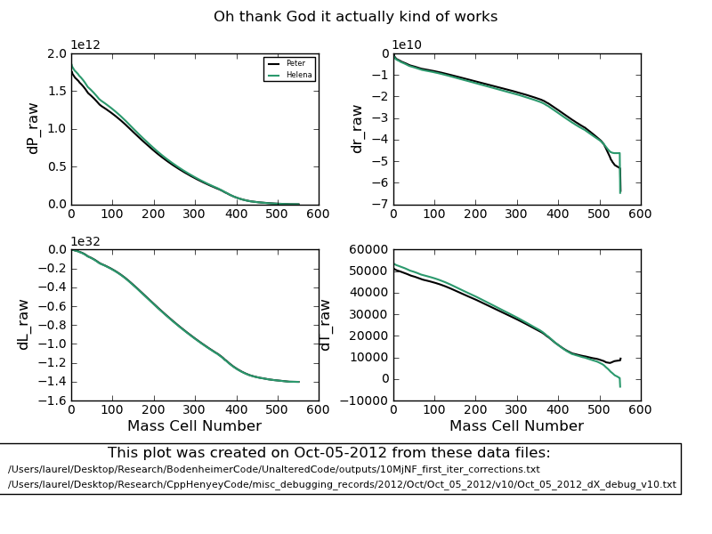

Date & Time: Oct. 8, 2012
Location: campus
Computing context: MachoMac
(/Desktop/Research/CppHenyeyCode/src, /Desktop/Research/BodenheimerCode/UnalteredCode)
From last time:
Maybe the differences are due to something with the timestep size in Helena vs. Peter?
dTime values
In Helena: 10^11 seconds
In Peter: 0.0 seconds
Maybe that's it then. Let's set dTime = 0.0 seconds in Helena and re-run this whole thing.
YES, THAT SOLVES IT!!!! (Well, a significant portion of it at least.) Peter's code was running with a timestep size of zero seconds, while my code had been running with a timestep size of 10^11 seconds!!! When I changed dTime in Helena to zero, here's what I got (Figure 4):

Figure
4
We're not totally out of the woods yet, because you can see that things are still not lining up at the outer boundary. I'm pretty sure this boils down to how the outermost G values are calculated, which in turn depends on how the atmospheric P/T/R/rho values are getting calculated. Debugging my atmos subroutine is probably going to be a long, involved, gnarly process that will drag on for about another month.
But.
This is a very good and encouraging breakthrough.
Still to do:
Still need to fix the problem w/ the G values disagreeing at the outermost boundary
Check/ compare the T/P/Ratm values that Peter adn Helena are generating
are the inputs to the atmos subroutine the same every time it's called (same b/w the codes, not b/w the calls)?
Is it something buggy w/in the atmos subroutine, or is the bug in the inputs that are being supplied to the atmos subroutine?
Also need to re-test that the dTime value/difference was causing the differences b/w the dX profiles for the 1Msun, n=3/2 polytrope test case!
Run both codes on both test cases for many iterations, but w/ dTime=0, to see how and if they converge, and to check whether they converge to the same solutions
Run both codes for 1 iteration w/ dTime >0
Run both codes for several iterations, for one timestep, with dTime > 0
Run both codes for several timesteps
Run both codes for 1 timestep, w/ a range of dTime values, to see whether/how the codes' results disagree for very small or large timesteps
Still need to sort out this outer boundary condition/G-value discrepancy b/2 the codes before declaring victory.
For the 10Mjup, no-fusion test case:
|
variable name/ value |
In Peter |
In Helena |
|
Pjmax |
1.669e8 |
1.669e8 |
|
Tjmax |
12161.16 |
12161.2 |
|
Ljmax |
1.402235e32 |
1.40224e32 |
|
Rjmax |
8.75421e10 |
8.75421e10 |
|
Patm |
1.6699377e8 |
1.46e8 |
|
Tatm |
12151.18 |
7.532.03 |
|
Latm(?) |
N/A |
N/A |
|
Ratm |
1.5036e10 |
1.1185e10 |
To Do Today:
Pick up where I left off last time with the P/R/Tatm debugging.
The atmos values that I got/called from Peter's code-- were those at the 0th (outermost) point of the atmosphere? Or the innermost point? Check this, first, because it looks like the P/T/Ratm values Peter's code returned were basically the same as the P/T/Rjmax values that were fed to it.
From Peter's code, at the outer boundary:
G1 = -409.950708925724
Pouter = 166993483.387042 Patm = 166993893.337751
G2 = -42716.9422760010
X(J2,2) = 87542104809.4471 X(J1,2) = 72506027832.4280 Ratm = 15036119693.9613
G3 = 0.00000000000000
X(J2,3) = 1.402235808868283E+032 X(J1,3) = 1.402235808868283E+032
G4 = -3.284887504560174E-002
X(J2,4) = 12161.1609923647 Tatm = 12161.1938412397
Let's start by plotting/comparing the Helena and Peter atmos values:
tau/optical depth
dM
dtau
tau vs. T
tau vs. P
tau vs. R
tau vs. M
To keep in mind for later: